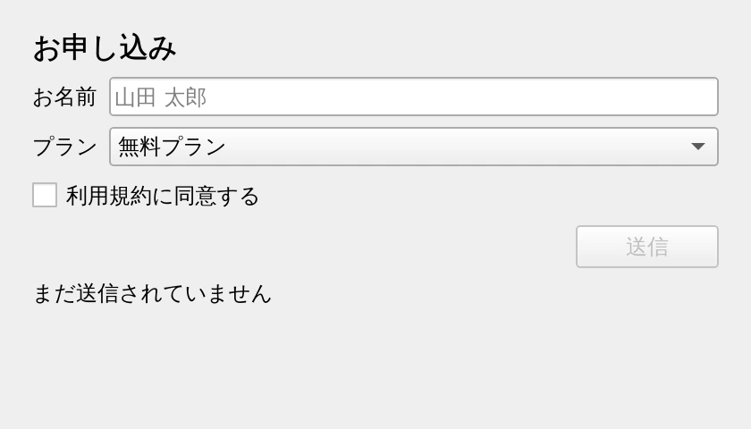

第 9 章·読了目安 12 分
第9章 Qt Designer — 画面をマウスで作る
コードを書かずに画面を組み立てるツールが標準で付いてきます。作った .ui ファイルを Python から使う 2 つの方法を比べます。
ここまでは画面をすべてコードで組み立ててきました。
Qt にはもうひとつのやり方があります。
Qt Designer という、マウスで画面を作るツールです。
しかも pip install pyside6 のときに一緒に入っています。
起動する
pyside6-designer起動すると「新しいフォーム」を選ぶ画面が出ます。 とりあえず Widget を選べば、空のウィンドウから始められます。
| 選ぶもの | 作られるもの | 使いどころ |
|---|---|---|
| Widget | QWidget | 画面の一部、タブの中身 |
| Main Window | QMainWindow | メニュー付きのアプリ本体 |
| Dialog with Buttons Bottom | QDialog | OK / キャンセル付きのダイアログ |
Designer での作業の流れ
- 左のパネルから部品をドラッグして置く。この時点では自由な位置に置かれます
- 右のパネル（プロパティエディタ）で設定を変える。とくに
objectNameが重要です - レイアウトを適用する。ここがいちばん大事です（下記）
.uiファイルとして保存する
部品を置いただけだと、絶対座標で固定されたままです。 ウィンドウをリサイズすると崩れます。
まとめたい部品を複数選択して右クリック →［レイアウト］→［垂直に並べる］などを選ぶか、 背景（フォーム自体）を右クリックしてレイアウトを適用します。 いちばん外側のフォームにレイアウトが適用されているかを必ず確認してください。 適用されていると、上部のツールバーの「レイアウトを分割」ボタンが押せる状態になります。
Designer で付けた objectName が、そのまま Python 側の属性名になります。
pushButton_3 のような自動生成の名前のままにせず、
submitButton のように意味のある名前にしておくと、後の作業が段違いに楽になります。
.ui ファイルの正体
保存された .ui は、ただの XML テキストです。
Git で差分も見られますし、いざとなれば手で編集もできます。
<widget class="QLineEdit" name="nameEdit"> <property name="placeholderText"> <string>山田 太郎</string> </property></widget>Python から使う 2 つの方法
方法 1: pyside6-uic で Python に変換する（おすすめ）
pyside6-uic ch09_form.ui -o ui_ch09_form.py
これで Ui_ProfileForm というクラスを持つ Python ファイルが生成されます。
生成されたクラスは「画面を組み立てる手順書」であって、ウィジェットそのものではありません。
そのため、QWidget と一緒に継承して使います。
"""Qt Designer で作った .ui を使う（方法 1: pyside6-uic で Python に変換する）。事前に 1 回だけ実行しておく: pyside6-uic ch09_form.ui -o ui_ch09_form.py生成された Ui_ProfileForm は「画面を組み立てる手順書」であってウィジェットそのものではない。QWidget と一緒に継承して使う。実行: python ch09_designer_app.py"""import sysfrom PySide6.QtWidgets import QApplication, QWidgetfrom ui_ch09_form import Ui_ProfileFormclass ProfileForm(QWidget, Ui_ProfileForm): def __init__(self): super().__init__() self.setupUi(self) # ここで .ui の中身が self の上に組み立てられる # .ui で付けた objectName が、そのまま属性名になる。 self.submitButton.clicked.connect(self.on_submit) self.agreeCheck.toggled.connect(self.submitButton.setEnabled) self.submitButton.setEnabled(False) def on_submit(self): name = self.nameEdit.text() or "ななし" plan = self.planCombo.currentText() self.resultLabel.setText(f"{name} さんを「{plan}」で受け付けました")app = QApplication(sys.argv)form = ProfileForm()form.show()sys.exit(app.exec())
ui_*.py の先頭には「WARNING! All changes made in this file will be lost」と書かれています。
.ui を直して変換し直すたびに、上書きされて消えるからです。
動作（シグナルの接続など）は必ず自分のクラス側に書いてください。
Designer で .ui を編集しても、ui_*.py は自動では更新されません。
毎回 pyside6-uic を実行する必要があります。
忘れると「Designer では直したのに反映されない」と悩むことになります。
方法 2: 実行時に QUiLoader で読み込む
"""Qt Designer で作った .ui を使う（方法 2: 実行時に QUiLoader で読み込む）。変換の手間がない代わりに、 ・エディタの補完が効かない（属性がその場で生えるため） ・.ui の配布が必要 ・load() が返すのは新しいウィジェットで、self ではないという違いがある。実行: python ch09_uiloader.py"""import sysfrom pathlib import Pathfrom PySide6.QtUiTools import QUiLoaderfrom PySide6.QtWidgets import QApplicationapp = QApplication(sys.argv)loader = QUiLoader()ui_file = Path(__file__).parent / "ch09_form.ui"form = loader.load(ui_file) # 戻り値が画面そのものif form is None: raise SystemExit(f"読み込みに失敗しました: {loader.errorString()}")# 子ウィジェットは objectName で属性としてたどれる。form.submitButton.setEnabled(False)form.agreeCheck.toggled.connect(form.submitButton.setEnabled)form.submitButton.clicked.connect( lambda: form.resultLabel.setText( f"{form.nameEdit.text() or 'ななし'} さんを" f"「{form.planCombo.currentText()}」で受け付けました" ))form.show()sys.exit(app.exec())変換が要らないぶん手軽ですが、いくつか制約があります。
| 方法 1（uic で変換） | 方法 2（QUiLoader） | |
|---|---|---|
| 事前の変換 | 必要 | 不要 |
| エディタの補完 | 効く | 効かない |
| 配布するもの | .py だけでよい | .ui も同梱する |
| 継承して使う | できる | できない（戻り値が別インスタンス） |
| おすすめ度 | ★ こちらを推奨 | プロトタイプ向け |
loader.load() は新しいウィジェットを作って返します。
self の上に組み立ててくれるわけではありません。
そのため、QWidget を継承したクラスの __init__ で
self.ui = loader.load(...) としても、
self 自体は空のままです。
継承して使いたいなら、方法 1 を選んでください。
Designer とコード、どちらで作るべきか
| 場面 | 向いているやり方 |
|---|---|
| 入力項目の多い設定画面・フォーム | Designer。手で書くと退屈で長い |
| 見た目を何度も調整したい | Designer。結果がその場で見える |
| 実行時に項目数が変わる画面 | コード。Designer では表現できない |
| 同じ部品を繰り返し生成する | コード。ループで書ける |
| 差分レビューを重視する | コード。XML の差分は読みにくい |
現実には併用が多いです。 土台のフォームは Designer で作り、動的に増える部分だけコードで足す、という形です。
pyside6-designerを起動し、Widget フォームにQLineEditとQPushButtonを 1 つずつ置く。- 背景を右クリックして［レイアウト］→［垂直に並べる］を適用する。
objectNameをそれぞれinputEdit/okButtonに変える。my_form.uiとして保存し、pyside6-uic my_form.ui -o ui_my_form.pyを実行する。ch09_designer_app.pyを真似して、ボタンを押すと入力内容を表示するようにする。
この章のまとめ
pyside6-designerでマウスで画面を作れる。追加インストールは不要。- Designer ではレイアウトの適用を忘れない。これをしないと崩れる。
objectNameがそのまま Python の属性名になる。意味のある名前を付ける。- 使い方は
pyside6-uicで変換する方法を推奨。生成ファイルは手で触らない。 QUiLoaderは手軽だが、補完が効かず継承もできない。